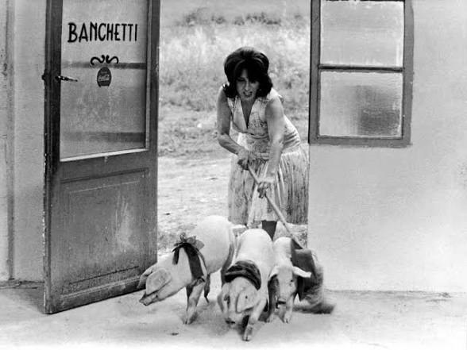

← Actualités · 2027
Mamma Roma en création au Teatro Colón

Mamma Roma, opéra d'après Pasolini mis en scène par Martin Bauer, est créé au CETC — Teatro Colón (Buenos Aires) en 2027.
Autour d'une table qui devient tombeau, Mamma Roma poursuit le dialogue de STOPERA! avec la scène lyrique argentine. Création au Centro de Experimentación del Teatro Colón (CETC), qui en assure la production.